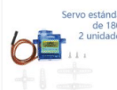

Explora nuestros 26 componentes.
Elige un sensor, una entrada, una pantalla o un actuador. Hemos retirado la protoboard y los tres tipos de cables Dupont de este catálogo para centrarnos en las prácticas de programación. Los cables Dupont siguen utilizándose para conectar los módulos a la Shield.
26 componentes. 156 actividades. Mucho por descubrir.
Abre cualquier fotografía para trabajar con dos programas de ejemplo, solicitar imágenes de bloques reales al renderizador de MakeCode (con Internet) y superar seis retos graduados, cada uno con su esquema de cableado mediante los Dupont del kit.




Las fotografías proceden del inventario que nos facilitaste. Cada ficha incorpora seis actividades y dos programas de ejemplo; los bloques reales se obtienen con MakeCode cuando hay conexión. Las conexiones deben comprobarse con el módulo físico. Abre las fichas con ejemplos de código, bloques y precauciones.